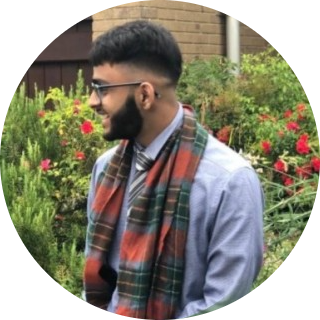

|  |
Asad Raza
Future Full Stack Developer
BA in Media and Communications
BA in Media and Communications
|
Personal Statement
I am a Media and Communication graduate looking for a graduate role within the field of IT that will help me widen my knowledge and experiences as well as make substantial progress in my professional career.
I have valuable transferable experience for entry-level jobs within the field of Media and Communications and IT which I have obtained through my degree alongside previous work experience.
I am self-motivated and eager to gain experience in the working field which will also allow me to pursue a long-term career within the field of media and IT.
I also have strong skills in ABODE Photoshop and Illustrator with a desire to learn and develop more skills in those softwares as well as beginner skills in coding languages such as HTML,
CSS and JavaScript with a passion to learn more. I am also an adaptable and flexible individual.
I use my free time to broaden my skills whether it is through digital art, writing, coding, or reading and I am a passionate individual looking to push myself further.
Key Skills
Communication
I am a confident speaker, familiar with delivering presentations to different types of audiences which has been integrated with my degree modules.
I am Bilingual as I am fluently able to speak both English and Urdu as well as able to write professionally and academically.
Motivation and drive
Self-reliant individual, ensuring all personal tasks are carried out to the highest level of quality. Possesses a strong initiative when faced with problem-solving scenarios.
Teamwork
Proactive team player, bringing significant contributions to group projects, collaborating effectively with team members, to help in hitting targets.
Group work is a key element in all walks of life: during employment; whilst at university; or every minute on the sports field.
IT
Proficient user of mainstream computer software, such as Microsoft Office applications,
as well as skills in Photoshop, Illustrator, and InDesign. Also possessing beginner skills in coding languages HTML, CSS, JavaScript.
Education Hisotry
- De Montfort University (DMU) Leicester : September 2019 - May 2022
Media and Communications BA – predicted grade 2.1.
- Thomas Becket Catholic School: September 2017 – June 2019
A-Levels:
Media (C), History (C), Sociology (D).
- Abbeyfield School Academy: September 2012 – June 2017
7 GCSEs (A-C) including Maths (C), English Language (C), English Literature (C), History (B), Media (B)
Employment Hsitory
Call Agent | Novacroft : June 2021 – October 2021
- Receiving Inbound calls: and dealing with all initial customer communications.
- Following up on ongoing customer cases and communicating progress to management and customer.
- Creating and maintain customer call logs.
- Storing and organising data securely.
Online Internship | HZ TECH: May 2020 – August 2020
- Introductory course in graphic design
- Introductory course in HTML, CSS, and JavaScript
Sales Advisor | Leather and Sports Metropolis: November 2018 – February 2019
- Working as part of the sales team to develop both new and existing markets.
- Liaising with customers & the dealer network to answer and resolve their queries.
- Identifying and then researching potential leads and opportunities.
- Collecting all the information required to create a request for an estimate.
- Writing accurate & informative sales reports and documentation.
- Contacting prospective clients by phone and email and identifying the customer's needs.
- Making appointments to meet new and existing clients.
Extra-Curricular Activities:
Volunteer | The Air Ambulance Service Boutique : May 2019 – June 2019
- Helped volunteer at the Air Ambulance charity shop during my second year of Sixth-Form.
- Duties included helping organise donated items, serving customers and managing the till.
Volunteer | Dua E Zehra, Northampton : August 2013 – Present
- Volunteering at my local Mosque weekly and at big events by serving free food to the mosque community as well as cleaning the premises after weekly events.
Teacher | Zainabiya Madressa, Milton Keynes : September 2015 – August 2016
- Teaching Children how to read Arabic as well as help supervise in other Islamic classes such as Islamic Manners and History.
Digital / Graphic portfolio
Reference Available at Request.
Connect with me on Linkedin